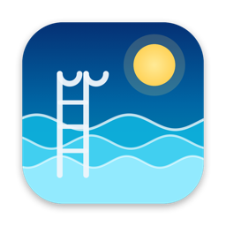
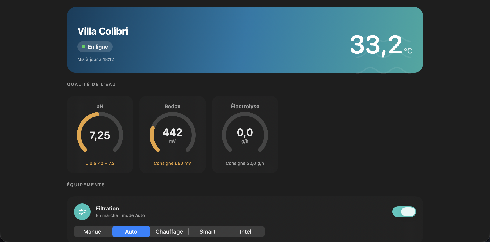

Hayward Monitor is a native macOS app for Hayward AquaRite / Sugar Valley NeoPool systems — the pools driven by the PoolWatch and Vistapool iPhone apps. Dashboard, controls and setpoints, right on your desktop. Hayward Monitor est une app macOS native pour les systèmes Hayward AquaRite / Sugar Valley NeoPool — les piscines pilotées par les apps iPhone PoolWatch et Vistapool. Tableau de bord, commandes et consignes, directement sur votre bureau. Hayward Monitor 是一款原生 macOS 应用，适用于 Hayward AquaRite / Sugar Valley NeoPool 系统（即 PoolWatch 和 Vistapool iPhone 应用所控制的泳池）。仪表盘、控制与设定值，尽在您的桌面。
macOS 14+ · Developer ID signed & notarized · Sparkle 2 updates · MIT license macOS 14+ · Signée Developer ID & notariée · Mises à jour Sparkle 2 · Licence MIT macOS 14+ · Developer ID 签名并经公证 · Sparkle 2 更新 · MIT 许可证

Water temperature, pH, redox, chlorine, electrolysis output and WiFi signal — refreshed every 30 seconds.Température de l'eau, pH, redox, chlore, production d'électrolyse et signal WiFi — rafraîchis toutes les 30 secondes.水温、pH、氧化还原电位、氯、电解产量与 WiFi 信号——每 30 秒刷新。
Filtration and pump modes, pool light with scheduling, electrolysis boost, cover mode, four aux relays.Filtration et modes pompe, éclairage avec programmation, boost électrolyse, mode volet, quatre relais auxiliaires.过滤与水泵模式、可编程照明、电解增强、泳池盖模式、四路辅助继电器。
pH min/max, redox target and electrolysis production, applied explicitly — no accidental changes.pH min/max, cible redox et production d'électrolyse, appliquées explicitement — pas de changement accidentel.pH 上下限、氧化还原目标与电解产量，需显式应用——避免误操作。
Your PoolWatch credentials live in the macOS Keychain. Sandboxed app, HTTPS only, no analytics, open source.Vos identifiants PoolWatch restent dans le Trousseau macOS. App sandboxée, HTTPS uniquement, zéro télémétrie, open source.您的 PoolWatch 凭据保存在 macOS 钥匙串中。沙盒应用、仅 HTTPS、无遥测、开源。
Sparkle 2 + notarized DMGs + EdDSA signatures — Check for Updates… downloads, swaps and relaunches.Sparkle 2 + DMG notariés + signatures EdDSA — Rechercher les mises à jour… télécharge, remplace et relance.Sparkle 2 + 已公证 DMG + EdDSA 签名——检查更新即可下载、替换并重启。
Talks to the same Hayward cloud as the official apps through three documented endpoints. Nothing else.Parle au même cloud Hayward que les apps officielles via trois endpoints documentés. Rien d'autre.通过三个已记录的端点与官方应用相同的 Hayward 云通信,仅此而已。
Grab the latest signed .dmg from GitHub Releases and mount it.Récupérez le dernier .dmg signé depuis GitHub Releases et montez-le.从 GitHub Releases 获取最新签名的 .dmg 并挂载。
Drop Hayward Monitor into /Applications. Gatekeeper accepts it — notarized by Apple.Déposez Hayward Monitor dans /Applications. Gatekeeper l'accepte — notariée par Apple.将 Hayward Monitor 拖入 /Applications。已经 Apple 公证，Gatekeeper 直接放行。
Use your PoolWatch / Vistapool account. Your pool appears; you're in control.Utilisez votre compte PoolWatch / Vistapool. Votre piscine apparaît ; vous avez la main.使用您的 PoolWatch / Vistapool 账户登录，泳池即刻呈现，尽在掌控。
Unofficial project — not affiliated with Hayward or Sugar Valley. It controls your own pool through your own account, using the same cloud API as the official apps. Projet non officiel — sans affiliation avec Hayward ou Sugar Valley. Il pilote votre propre piscine via votre propre compte, avec la même API cloud que les apps officielles. 非官方项目——与 Hayward 或 Sugar Valley 无关。它通过您自己的账户、使用与官方应用相同的云 API 控制您自己的泳池。